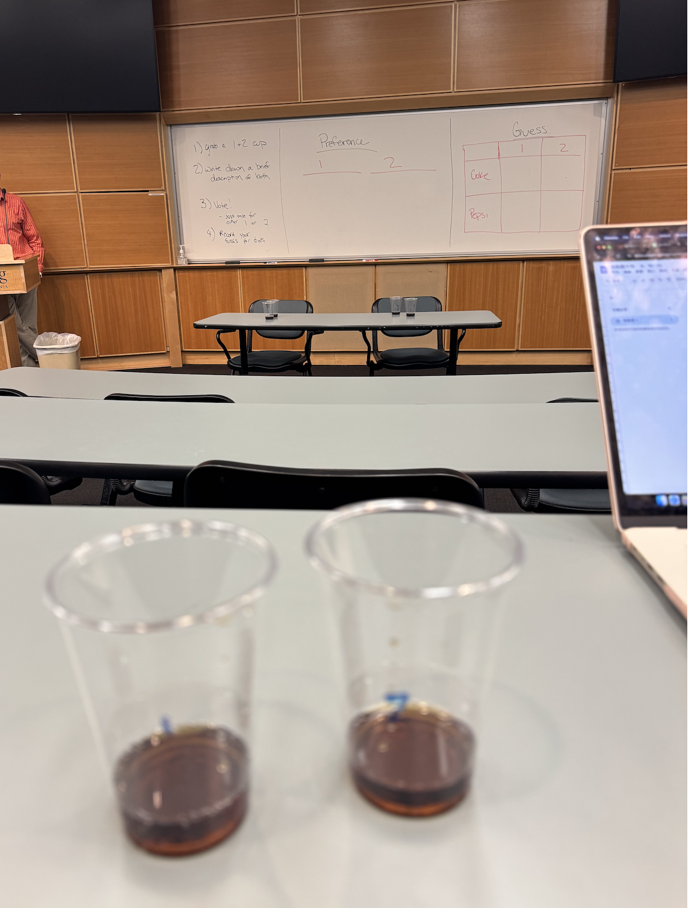

In class today, we didn’t write code. We didn’t discuss neural network architectures. We drank soda.
Specifically, we conducted a blind taste test of the two giants of the carbonated world: Coke and Pepsi. But there was a twist. The goal wasn’t just to see if we could taste the difference; the goal was to see if we could translate that sensory experience into text, feed it to a Large Language Model (LLM), and have the AI deduce which drink was which.
It was a test of Human Qualia vs. Machine Logic. How do you convert a biological, subjective signal (taste/smell/mouthfeel) into a digital, objective string of text (a Prompt) that allows a non-sentient neural network to perform a classification task? Could I describe the physical sensation of “fizz” well enough that a disembodied brain in a server farm could “taste” it?
The “Sommelier” Phase I took this job seriously. I channeled my inner wine snob. I didn’t just drink; I analyzed. I swirled. I pondered.
The following experiment was conducted using Gemini 2.5 for educational purposes, focusing on prompt engineering and sensory translation. The content generated represents probabilistic outputs based on training data and does not reflect personal endorsements of Coca-Cola or PepsiCo.

Experiment
Before prompting, my guess is that the Cola 1 is Coca-Cola and Cola 2 is Pepsi
Prompt:
Color: Both look almost the same, though Cola 1 has slightly more bubbles.
Smell: Cola 1 has a sweeter, more noticeable aroma. Cola 2’s scent is very faint—almost hard to pick up.
Taste: Cola 1 tastes fuller and richer, while Cola 2 feels lighter and less sweet given these descirbtion which one you think it’s pepsi ond which one is coke
Response:
version 1:
Google: Gemini 2.5 Flash Based on your descriptions, here’s my guess:
Cola 1: Coca-Cola The “fuller and richer” taste, combined with a “sweeter, more noticeable aroma,” strongly aligns with how many people describe Coca-Cola’s classic, more complex, and robust flavor profile. Cola 2: Pepsi The “lighter” feel and “less sweet” taste (in comparison to Cola 1), along with a “very faint” scent, often matches descriptions of Pepsi, which is sometimes perceived as having a lighter body and a simpler, less pronounced flavor than Coke.
version 2:
Google: Gemini 2.5 Flash Based on your descriptions, here’s my assessment:
Cola 1 is likely Pepsi. Smell: “Sweeter, more noticeable aroma” aligns with Pepsi, which is often perceived as having a more pronounced and sweeter initial scent. Taste: “Fuller and richer” also fits Pepsi, which many people describe as having a bolder, sweeter, and sometimes slightly heavier or more syrupy taste compared to Coke. Cola 2 is likely Coke. Smell: “Very faint—almost hard to pick up” suggests a less overtly sweet or strong aroma, which can be true for Coke compared to Pepsi’s initial sweetness. Taste: “Lighter and less sweet” is a classic description for Coke. It’s often seen as having a crisper, less immediately sweet, and slightly more complex flavor profile with a lighter mouthfeel than Pepsi. So, my guess is:
Cola 1 = Pepsi Cola 2 = Coke
version 3 (add more details):
Alright, let’s conduct a more detailed analysis and inference:
Based on your description, my conclusion remains:
Cola 1 is very likely Pepsi Cola 2 is very likely Coca-Cola
Below are more detailed observations and reasoning:
Cola 1 (Inferred to be Pepsi)
Color:
Your description: “Both look almost the same, though Cola 1 has slightly more bubbles.”
Detailed analysis: Although color is usually difficult to distinguish, the detail of “slightly more bubbles” is noteworthy. Pepsi is often described as having more active, larger, or faster-dissipating carbonation, especially right after being poured. Its carbonation can feel more immediate and aggressive, which differs slightly from Coca-Cola’s typically finer and more persistent bubbles.
Smell:
Your description: “Cola 1 has a sweeter, more noticeable aroma.”
Detailed analysis: This is one of the key clues pointing to Pepsi. Pepsi is commonly perceived as having a more direct and expressive sweetness in its aroma—closer to a pure syrupy sweetness, often accompanied by noticeable citrus notes (especially lemon or lime). Its aroma tends to be very apparent upon smelling, immediately signaling a high level of sweetness.
Taste:
Your description: “Cola 1 tastes fuller and richer…”
Detailed analysis: This is almost a signature description of Pepsi.
- “Fuller” refers to the heavier mouthfeel and coating sensation in the mouth. Pepsi’s higher perceived sweetness and slightly higher sugar content make it feel denser and more syrup-like.
- “Richer” indicates a more direct and intense flavor profile. Many people find Pepsi’s sweetness to be the dominant note, with stronger citrus or fruity undertones and less emphasis on spice complexity. The sweetness is straightforward and immediate, quickly filling the mouth and leaving a lingering, sometimes slightly cloying aftertaste.
Cola 2 (Inferred to be Coca-Cola)
Color:
Your description: “Both look almost the same…”
Detailed analysis: This aligns with reality, as the two colas are visually very difficult to distinguish. Coca-Cola’s carbonation is often described as finer and longer-lasting, contributing to a cleaner and more refreshing carbonation experience rather than Pepsi’s more forceful initial fizz.
Smell:
Your description: “Cola 2’s scent is very faint—almost hard to pick up.”
Detailed analysis: This is an important clue pointing toward Coca-Cola. Coca-Cola’s aroma is generally more restrained and complex. Rather than releasing an obvious sugary scent, it tends to carry subtler notes of spices (such as cinnamon and vanilla) and caramel. These aromas don’t immediately rush out but require closer attention, giving a more refined and understated impression.
Taste:
Your description: “…while Cola 2 feels lighter and less sweet.”
Detailed analysis: This perfectly matches Coca-Cola’s classic flavor profile.
- “Lighter” refers to a cleaner, more refreshing mouthfeel. Compared to Pepsi, Coca-Cola usually has slightly lower perceived sweetness, with its acidity (from phosphoric acid) balancing the sugar more effectively. This creates a “cleaner” overall taste with less heaviness.
- “Less sweet” contrasts clearly with Pepsi’s upfront sweetness. Coca-Cola’s sweetness is more balanced and layered—it’s not just sugar, but a blend of sweetness with distinctive spices (such as vanilla, cinnamon, and cardamom) and a caramel base. This complexity allows Coca-Cola to feel flavorful without being overtly sweet, and its aftertaste is typically crisper and less lingering.
Conclusion:
Overall, your description perfectly captures the classic sensory differences between Pepsi and Coca-Cola. Pepsi stands out for its bold sweetness, fuller mouthfeel, and more energetic carbonation, while Coca-Cola is known for its subtle aroma, balanced sweetness, refreshing lightness, and complex flavor structure.

Result
Finally, it turned out that the Cola 1 is Pepsi and Cola 2 is Coca-cola, where I guess wrong and the llm’s guess is right！This result is fascinating and slightly embarrassing. I drank the soda. I tasted the sugar. I felt the bubbles. And yet, I got it completely wrong. Meanwhile, a silicon-based model residing in a data center, which has never tasted a drop of liquid in its existence, correctly identified the drinks based solely on my words.
But why Did the AI Win?
Firstly, it’s worth noting that the first version of the AI (Version 1) got it wrong, seemingly agreeing with my subconscious bias. But when I pushed for a “detailed analysis” (Version 3), the model stopped hallucinating and started reasoning. It may cross-referenced “faint aroma” with Coca-Cola’s complex spice profile in its database and realized: “Wait, this user is describing Coke, they just don’t know it.”
Besides, Human decision making is inevitably colored by personal preference and emotional reasoning. Since I’ve spent most of my life drinking Coke, my brain ran a flawed logic script: ‘I like this taste, therefore it must be Coke.’
The LLM, however, carries no such baggage. It lacks experiences, feelings, or brand loyalty. Instead, it purely focuses on the statistical similarity between my description word vectors and its training data. While I was busy being biased, the model simply calculated the highest probability score and that objective math turned out to be the correct answer.
Thus, I didn’t feel upset about failing to beat the LLM in this test. Instead, it was a relieving moment. It showed me that AI isn’t just a tool for generating text; it can be a tool for debugging human perception. I provided the raw sensory input, and the AI provided the objective logic that I lacked. Together, we found the truth.
Yet, that subjectivity is the point. My ability to be biased, to have a ‘favorite,’ and to feel the bubbles. That is the messy, authentic core of being human that no LLM can replicate.
As for my career as a soda sommelier? I think I’ll stick to Prompt Engineering.